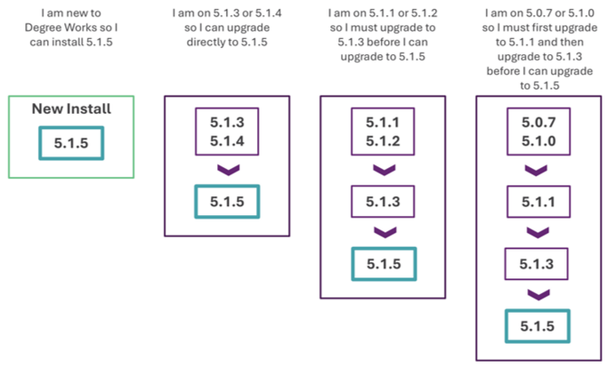

Release 5.1.5
Degree Works 5.1.5 includes new functionality, improves existing functionality, resolves change requests, and more.
For more detailed information about the release, see the Degree Works 5.1.5 and Transfer Equivalency 5.1.5 release records.
General Degree Works Release Information
Overview
The central themes of Release 5.1.5 include expanding the functionality offered in the Responsive Dashboard, Transit, and Transfer Equivalency Self-Service to meet the needs of the client base and enhancements to support Degree Works as a SaaS solution. Release 5.1.5 also meets customer satisfaction goals by delivering over 10 improvements and 50 problem resolutions.
This release is a MINOR release so the version has been assigned as Release 5.1.5, and it will build on the baseline established by the previous MAJOR release, Release 5.1.0, and subsequent releases. This is still a significant release in terms of the product direction, and it continues to build on the infrastructure introduced for Cloud delivery.
Upgrade path
The Degree Works Release 5.1.5 supports a new installation or a direct upgrade path for existing customers currently on Release 5.1.3 or Release 5.1.4.

If you are on any service pack level, the upgrade path you should follow is from your base release as service packs are included in the next release. For example, if you are on 5.1.4.2 you would follow the path of upgrading from Release 5.1.4 to Release 5.1.5.
We encourage customers to stay current with releases so multiple jumps are not required when processing a new release upgrade.
Release support status
With the release of Release 5.1.5, Release 5.1.4 moves to Maintenance Support, while Release 5.1.3 moves to Sustaining Support. Releases 5.0.7, 5.1.0, 5.1.1 and 5.1.2 move to End of Support. Details about Ellucian Support Assurance can be found in article number 000038478.
Degree Works versions 5.0.0 through 5.0.6 are in End of Support as of June 30, 2024, and all Degree Works versions before 5.0.0 are in End of Support as of January 1, 2021. If you are on one of these versions of Degree Works, you must upgrade to at least Release 5.1.3 to process Release 5.1.5.
Degree Works releases follow a rolling schedule for support. This means that with each new release, all previous releases will transition to the next support status. For example:
- 5.1.6 is released in September 2025 with an Active status
- 5.1.5 released in March 2025 will move to Maintenance status
- 5.1.4 released in September 2024 will move to Sustaining status
- 5.1.3 released in March 2024 will move to End of Support status
Degree Works hardware and software requirements
Before beginning a new installation or upgrade, be sure to verify that your Degree Works environments meet the hardware and software requirements.
Supported Hardware Architectures and Associated Operating Systems
Ellucian's support of Linux 7 ended in June 2024. As of Release 5.1.4, Red Hat Linux 7 and Oracle Linux 7 are no longer supported operating systems.
For new client installations, only the following hardware architecture and operating system configurations are supported for Degree Works servers:
- Intel-based x86 running Red Hat Enterprise Linux 8.x (64-bit)
- Intel-based x86 running Oracle Linux Server 8.x (64-bit)
For upgrading clients only, the following hardware architecture and operating system configurations are supported for Degree Works servers:
- Intel-based x86 running Red Hat Enterprise Linux 8.x (64-bit)
- Intel-based x86 running Oracle Linux Server 8.x (64-bit)
- IBM running AIX 7.x (64-bit)
- Sun SPARC platform running Solaris 11 (64-bit)
- HP Integrity Platform (IA64) running HP-UX 11.x (64-bit)
Supported RDBMS
Degree Works Release 5.1.5 supports Oracle 19c.
Supported Browsers
Ellucian makes every effort to test and support the current versions of the following browsers at the time of a release:
- Google Chrome
- Mozilla Firefox
- Apple Safari
- Microsoft Edge
For more information, see Ellucian Global Web Browser Support Policy and Matrix.
RabbitMQ
Degree Works Release 5.1.5 has been tested against the following versions:
- RabbitMQ server v3.13.1
- RabbitMQ client v0.14.0
Java
Starting with Degree Works Release 5.1.5, Oracle Java Development Kit (JDK) or OpenJDK version 17 is required on both your classic and Java application servers. Java 11 is no longer supported.
You can have other versions of Java on these servers, but the Degree Works environments need to be able to be configured for Java 17. The installer will not run if the correct Java version cannot be found, and the Java applications may encounter errors on deployment and during use if a prior version of Java is used.
GCC Compiler
Degree Works Release 5.1.5 requires GCC version 8.x.
Apache FOP
Degree Works requires Apache FOP version 2.6 on the classic server.
OpenSSL
Degree Works requires OpenSSL version 1.1.1, including the openssl-devel package.
Degree Works Enhancements
Advanced Search highlights
Allow Advanced Search to retain list of students in results
In Responsive Dashboard, the Advanced Search dialog now retains the last search criteria and results until a new search is performed.
API highlights
Externalize and document Responsive Dashboard audit API endpoints
The Responsive Dashboard audit API endpoints have been externalized and documented. A GET on the /api/audit endpoint returns an existing audit in either JSON or XML format, depending on the media type specified.
If an audit doesn't already exist for the provided parameters and the dash.audit.runIfNone.enabled Shepherd setting is true, a new audit runs.Audit highlights
Obsolete DAP_AUDTREE_DTL database table and all supporting code
The DAP_AUDTREE_DTL database table and all its supporting code have been removed. Before updating to Release 5.1.5, you must move historical audits in the DAP_AUDTREE_DTL database table to the DAP_AUDIT_TREE database table.
Parser omits With qualifiers on cross-listed courses
The parser now properly applies With qualifiers on cross-listed courses that do not have a Cross-listed Term in CFG073 Cross-listed courses. Additionally, the parser now properly obeys all With qualifiers on a rule when used in conjunction with DWTERM. Also delivered in 5.1.4.1.
A steno abort error may occur during dap16all on blocks that are using CopyRulesFrom or CopyHeaderFrom
Steno abort errors no longer occur during DAP16 job run on blocks that are using CopyRulesFrom or CopyHeaderFrom in their scribe. Also delivered in 5.1.4.1.
Class being allowed to share incorrectly, violating ShareWith list qualifier
When the CFG020 DAP14 Recheck DontShare flag is enabled, the auditor now catches more DontShare scenarios and removes unlawful sharing. Also delivered in 5.1.4.1.
Authentication highlights
Accessing Responsive Dashboard APIs using BASIC authentication require core.security.shp.authentication.enabled setting to be true which should not be the case
Basic authentication for all Degree Works APIs now properly authenticate when the core.security.authenticationType Shepherd setting is either SAML or CAS and ignores the core.security.shp.authentication.enabled Shepherd setting. The core.security.shp.authentication.enabled Shepherd setting is only obeyed when the core.security.authenticationType Shepherd setting is set to SHP.
Banner highlights
Exceptions highlights
Exceptions on qualifiers are not being updated with a tag if the tag is Scribed after the exception is originally created
When a tag is added to a qualifier after an exception has been placed on it, the tag value now gets saved in the corresponding record in the DAP_EXCEPT_DTL table in the database. Also delivered in 5.1.4.2.
Responsive Dashboard highlights
Student header info and audit are sometimes not loading into Degree Works when using an external link
In Responsive Dashboard, a race condition in the code triggered by network speed has been resolved and now the student header and worksheet (or remaining page) consistently load when linking directly to a student from Banner Self-Service, Experience, or any other application using deep linking to access student information. Also delivered in 5.1.4.1.
Scribe highlights
Problems related to blank or NULL shp_fail_count values - Scribe, Controller, Authentication
Authentication-related errors no longer occur if, for any user, the value of SHP_FAIL_COUNT in the SHP_USER_MST table is null or blank.
SEP highlights
Display the college as part of the course description in SEP
For sites with multiple colleges in a single instance of Degree Works, users may need to know at which college the course is being offered when creating a plan in SEP. The Banner Course Extract (RAD34) now updates a new field in the rad_course_mst to capture the college associated with each course. Additionally, when the new Shepherd setting core.course.collegeIsEntity.enabled is set to true, the course search in SEP plans displays the associated college in the typeahead, helping students select the correct course more easily.
Entry problems when creating or editing a choice requirement that has a paired course
While adding a paired course to a choice requirement, the other course choices are no longer reordered or overwritten. After saving, however, the paired courses are still reordered to the end of the list of courses in the choice requirement.
When attempting to run a Planner audit on a plan that contains an unselected choice requirement in current/future term, an error regarding t.scribeRequirement is undefined displays in a new window
The Planner audit no longer shows an error if the plan has an unselected choice requirement added to a term equal to or greater than the student's active term. Also delivered in 5.1.4.2.
System highlights
Obsolete functional scripts that have an existing job in Transit
Several scripts on the Degree Works classic server that duplicate functionality are available in Transit. To reduce redundancy, the following scripts have been obsoleted in favor of the corresponding Transit job. The functionality remains, but you are only able to execute the processes from Transit. They can no longer be run directly on the classic server.
| dapblocksget | SCR07: List block text from Scribe |
| dapdelaudits | AUD02: Delete by freeze type and date |
| dapreq2ndlist | SCR06: List primary and secondary tags |
| dapreqcrs | SCR02: Find blocks where this COURSE is referenced |
| dapreqgrep | SCR08: List LOG entries from Scribe text SCR09: List TODO entries from Scribe text SCR10: Find blocks where this text is referenced |
| dapreqlist | AUD01: List unhooked and unenforced exceptions |
| dapreqlist | SCR05: List block changes within a specific date range |
| dapreqsearchnreplace | SCR11: Find and replace block text |
| dapucx2eqv | SYS03: Copy CFG070 to dap-eqv-crs-mst |
| ucxlist | UCX01: List modified UCX records |
Add support for Java 17 for Degree Works
Support for Oracle Java Development Kit (JDK) or OpenJDK version 17 was added to Degree Works. As of Release 5.1.5, this version is required on both the classic and application servers, and Java 11 is no longer supported.
Support languages other than English as the primary language for Degree Works users
A Spanish version of language properties for Responsive Dashboard, Transit, and Controller has been delivered. Users with the browser default language configured as Spanish (es) see the translated version of Degree Works instead of English. The translation applies only to the user interface text. Any data (such as course titles and UCX descriptions, or Scribe labels, remarks, and ProxyAdvice) is not translated automatically.
Add French Canadian translations to Degree Works in support of Bill 96
To support the regional regulatory requirements specified in Bill 96, which recognizes French as the common language of Québec, Canada, French Canadian translations have been added to the Responsive Dashboard, Controller, and Transit. Users with the browser default language configured as French Canadian (fr-CA) see the translated version of Degree Works instead of English. The translation applies only to the user interface text. Any data (course titles and UCX descriptions, or Scribe labels, remarks, and ProxyAdvice) is not translated automatically.
Transfer Equivalency Self-Service highlights
Support filter modes D (degree drives major), M (major drives degree), and C (major drives college)
Transfer Equivalency Self-Service now supports all filter modes for academic goals. All options for the core.whatIf.filterMode Shepherd setting can now be configured for Transfer Equivalency Self-Service: R (curriculum rules), D (degree drives major), M (major drives degree), C (major drives college), and N (no filtering). Also delivered in 5.1.4.1.
Degree Works updates
Database Changes
There are several database changes in Release 5.1.5.
The following tables were deleted:
- DAP_AUDTREE_DTL
- SHP_COMPOSER_MST
The following fields were added to RAD_COURSE_MST:
- RAD_ALIAS
- RAD_COLLEGE
Subtractions
With Release 5.1.5, the DAP_AUDTREE_DTL database table has been deleted. In Release 5.1.1, the DAP_AUDIT_TREE database table was added to store the body of an audit in a single BLOB (rather than multiple DAP_AUDTREE_DTL records) to improve performance when saving and retrieving audits. In Release 5.1.3, a utility was delivered to move historical audits in DAP_AUDTREE_DTL to DAP_AUDIT_TREE.
To determine if you have any historical audits that have not yet been converted, you can run the following SQL on your classic server:
runsql "select count(*) from DAP_AUDIT_DTL where DAP_CREATE_WHO!='BLOB';"If this count is zero, you likely do not have any data that needs to be converted and only need to remove any remaining records from the non-BLOB table. If this count is not zero, see the Convert audits to BLOBs Degree Works Community blog post and article KB000506155 for details on how to convert historical audits in DAP_AUDTREE_DTL to DAP_AUDIT_TREE.
- Remove all records from the non-BLOB table:
runsql "truncate table DAP_AUDTREE_DTL;" - Remove the parent audit records for the non-BLOB audits:
runsql "delete from DAP_AUDIT_DTL where DAP_CREATE_WHO!='BLOB';" - Verify that you no longer have any non-BLOB audits:
runsql "select count(*) from DAP_AUDIT_DTL where DAP_CREATE_WHO!='BLOB';"This should return a count of zero.
If you need assistance converting this data, contact the Ellucian Degree Works Action Line.
For more information about audits being saved as BLOBs, see the Audits saved as BLOBs Degree Works Community blog post.
Documentation
The documentation for this release is available on the Ellucian Documentation site. It can be viewed interactively and, if desired, can be exported in total or by topic. A login for the Customer Center is required to access the entire suite of documentation.
A small subset of user documentation can be found on the Ellucian Documentation site under the Use category. The Use category is available to all users, including those without a Customer Center login.
Transfer Equivalency Self-Service will continue to have online help built-in, because the target audience for this application is a prospective student.
You can find Degree Works product documentation in the Customer Center by following Resources > Documentation > All Documentation and selecting Degree Works.
Degree Works API documentation is also available in the Customer Center by following Resources > Documentation > All Documentation > API Catalog.
Degree Works 5.1.5 Service Pack 1
This patch corrects defects reported with Degree Works Release 5.1.5.
Click Attachments  on the side panel to download the service pack general information and instructions.
on the side panel to download the service pack general information and instructions.
Degree Works 5.1.5 Service Pack 2
This patch corrects defects reported with Degree Works Release 5.1.5.
Click Attachments on the side panel to download the service pack general information and instructions.